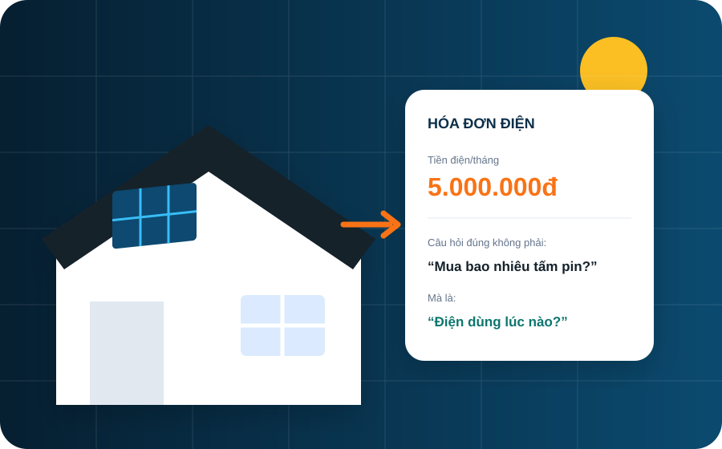
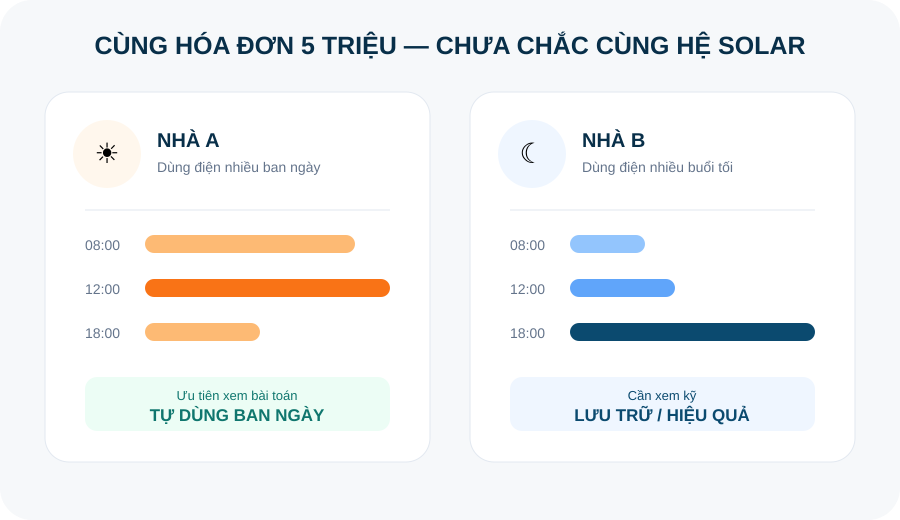
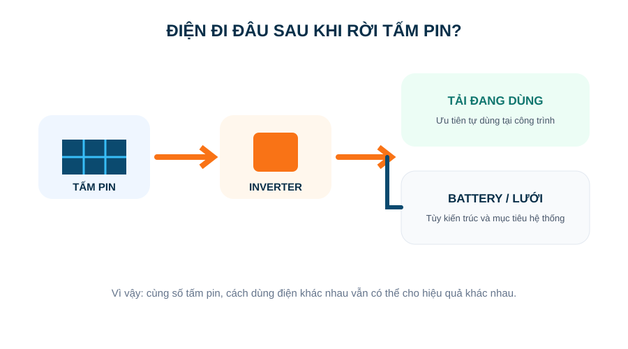

HÓA ĐƠN4.987.000đ↗
“Nhà tôi tốn gần 5 triệu/tháng…”
Con số này mới chỉ là điểm bắt đầu.
Gửi thông tin sử dụng điện để nhận đánh giá sơ bộ về công suất, diện tích mái và phương án hệ thống trước khi quyết định khảo sát.
Không cam kết mức tiết kiệm khi chưa có đủ dữ liệu tải điện và điều kiện mái.
Thay vì bắt đầu bằng “mua mấy tấm pin”, hãy nhìn thời điểm dùng điện, mái, bóng che và mục tiêu có cần backup hay không.
Nhập tiền điện của tôi →
Đây là những câu hỏi thực tế cần trả lời trước khi nói tới số tấm pin hay một mức giá.
Con số này mới chỉ là điểm bắt đầu.
Máy lạnh, bơm, văn phòng, sản xuất… dùng ban ngày sẽ tạo bài toán khác với tải buổi tối.
Battery chỉ hợp lý khi mục tiêu và biểu đồ tải thực sự cần nó.
Phải so đủ BOM, tương thích, bảo vệ, thi công và trách nhiệm bảo hành.
Tiền điện chỉ là điểm bắt đầu. Một phương án hợp lý còn phụ thuộc vào tỷ lệ điện dùng ban ngày, loại tải, diện tích mái, bóng che, hệ điện hiện hữu và nhu cầu lưu trữ khi mất điện.
Kiểm tra trường hợp của tôi →Điện mặt trời tạo ra ban ngày. Tỷ lệ tự dùng ảnh hưởng trực tiếp đến hiệu quả.
Diện tích, hướng, vật cản và kết cấu quyết định khả năng bố trí tấm pin.
1 pha/3 pha, tủ điện và đường dây cần được kiểm tra trước thiết kế.
Battery phục vụ mục tiêu khác với hệ chỉ tối ưu điện dùng ban ngày.

Một con số tiền điện giống nhau không tự động dẫn tới cùng cấu hình. Đây là lý do calculator chỉ đưa ra dải sơ bộ trước khi khảo sát.
Ba kiến trúc phổ biến phục vụ ba nhu cầu khác nhau. Phương án cuối cùng chỉ chốt sau khảo sát kỹ thuật.

Ưu tiên giảm lượng điện mua từ lưới khi công trình đang sử dụng điện vào ban ngày.
Kết hợp nguồn mặt trời, điện lưới và lưu trữ; cấu hình backup phụ thuộc thiết kế tải ưu tiên.
Tập trung vào lưu trữ và cấp điện cho tải được chọn khi cần; chi phí phụ thuộc dung lượng và công suất xả.
Tấm pin tạo điện DC. Inverter chuyển đổi và điều phối. Tủ điện bảo vệ, đóng cắt và kết nối hệ thống. Battery là phần tùy chọn theo nhu cầu lưu trữ/backup.
Tiền điện, loại công trình và thời gian sử dụng.
Đánh giá tiềm năng và thông tin còn thiếu.
Mái, bóng che, hệ điện, vị trí thiết bị và đường dây.
Cấu hình kỹ thuật, BOM, sản lượng dự kiến và chi phí.
Lắp đặt theo hồ sơ kỹ thuật và kiểm soát chất lượng.
Commissioning, bàn giao hồ sơ và cơ chế bảo hành.
Tự mua thiết bị rồi thuê thợ có thể là một lựa chọn, nhưng để biết có thực sự tiết kiệm cần đặt lên cùng một mặt bằng: model thiết bị, tương thích inverter–battery, tủ bảo vệ, dây dẫn, kết cấu mái, chống thấm, commissioning và đầu mối bảo hành.

Một mức giá cố định trước khảo sát có thể bỏ qua những khác biệt quan trọng của công trình. Vì vậy V2 không khóa khách vào một “gói” khi chưa đủ dữ liệu.
Thông tin dưới đây mang tính định hướng. Kết luận kỹ thuật cần dựa trên khảo sát và cấu hình thực tế.
Không phải hệ nào cũng cấp điện khi lưới mất. Khả năng backup phụ thuộc kiến trúc inverter, battery, tủ chuyển nguồn và tải được thiết kế ưu tiên.
Không. Nếu mục tiêu chính là tối ưu điện dùng ban ngày, battery có thể không phải lựa chọn đầu tiên. Cần xem tải và mục tiêu sử dụng.
Không. Hóa đơn giúp sàng lọc sơ bộ; công suất cuối cùng còn cần dữ liệu tải, mái, bóng che, hệ điện và mục tiêu của chủ công trình.
Không nên đưa một con số chung cho mọi công trình. Thời gian hoàn vốn phụ thuộc tổng đầu tư, sản lượng thực tế, tỷ lệ tự dùng, biểu giá điện và chi phí vận hành.
Rủi ro phụ thuộc hiện trạng mái, giải pháp liên kết và quy trình chống thấm. Đây là hạng mục cần kiểm tra trong khảo sát và QC thi công.
Cho chúng tôi biết mức tiền điện và cách sử dụng. Nếu có tiềm năng, bước tiếp theo mới là khảo sát.